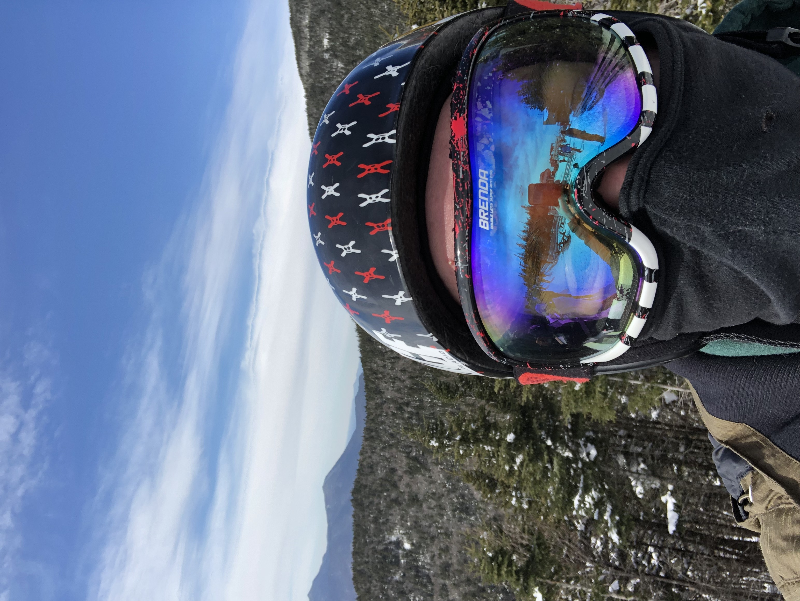

Being honest, i personally dont beleive that there is a whole lot to me. I mean all i really do on my down time is game, and watch anime. Although since i do live with a family of 5 with 2 brothers
it can be a lttle lively and distracting at times. During the winter I used to play hockey, played for 15 years with 13 of them being goalie. Now during the winter i would like to enter some srt of beer league and i go skiing every once in awhile if im not busy.
I would say that im a pretty heavy procastinater and that it leads to do other things like game and watch anime. one of my favourite quotes came from a chracter named Fuegoleon from the hit show
Black Clover by Yuki Tabata. He says Being weak is nothing to be ashamed of... Staying weak is!
. This is probably the most popular quote in the series,
I like this quote because it give me motivation to push through my procastination and do more thing that i would like to do. One of those things is going to the gym, it is a great way to clear the mind and stay/keep in shape.
Image
Hobbies
Some of my hobbies include a multitude of sports incuding skiing, obviously, and hockey as the two sports i participate the most in. My other hobbies include moslty just gaming, alot.